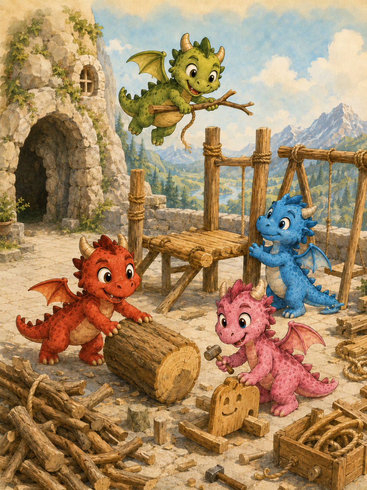

Rozprávka 0
Ako si dráčiky postavili ihrisko
Úvod do kráľovstva, kde sa princezná Lada nudí v paláci a v hore za mestom bývajú štyri malé dráčiky. Keď sa ich svety začnú približovať, obyčajná túžba po mieste na hranie sa zmení na prvé veľké dračie dobrodružstvo.
19 minprvé veľké dračie stavanie
Čítať rozprávku →